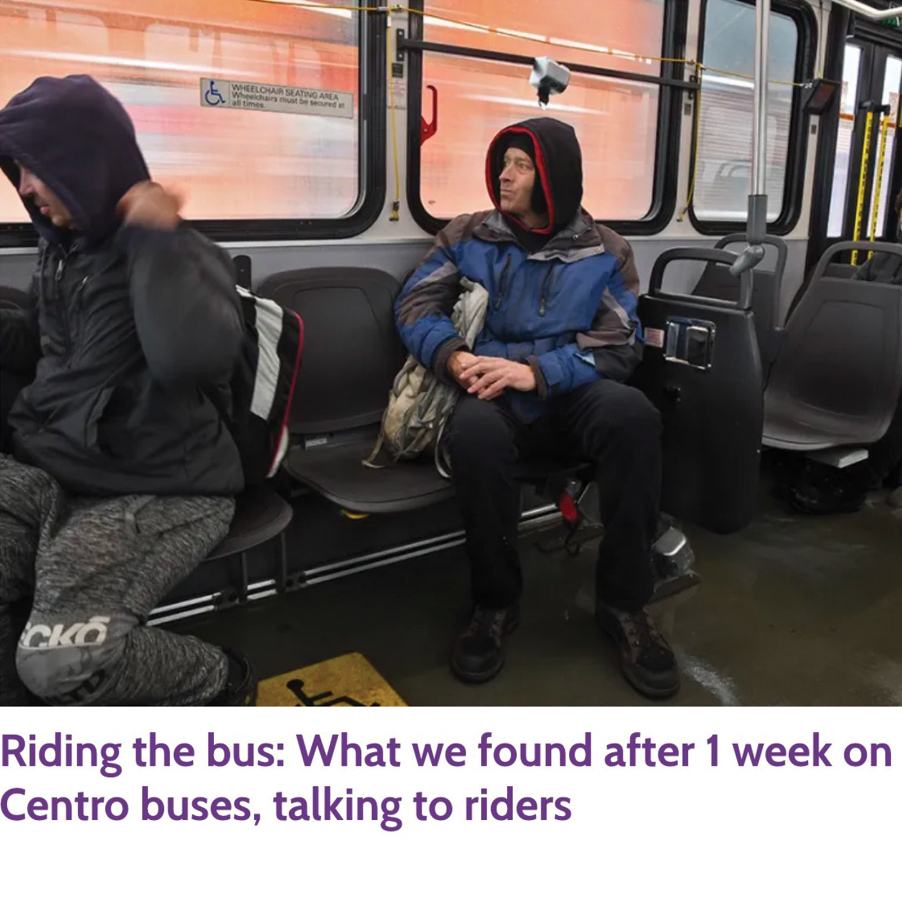

Top Clips

Riders had one glaring issue with Centro’s service: infrequent bus schedules create slack time in their day.

A woman from the Kyiv oblast shares her culture with host family in Central New York.

When war broke out in Ukraine, Oleg Grabovyy left Central New York and joined soldiers on the front lines.
Ukrainian American college students share feelings of conflict between upholding school responsibilities while supporting Ukraine amid war.